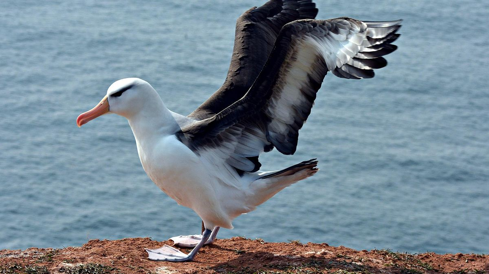

Souvent, pour s’amuser, les hommes d’équipage
Prennent des albatros, vastes oiseaux des mers,
Qui suivent, indolents compagnons de voyage,
Le navire glissant sur les gouffres amers.
À peine les ont-ils déposés sur les planches,
Que ces rois de l’azur, maladroits et honteux,
Laissent piteusement leurs grandes ailes blanches
Comme des avirons traîner à côté d’eux.
Ce voyageur ailé, comme il est gauche et veule !
Lui, naguère si beau, qu’il est comique et laid !
L’un agace son bec avec un brûle-gueule,
L’autre mime, en boitant, l’infirme qui volait !
Le Poëte est semblable au prince des nuées
Qui hante la tempête et se rit de l’archer ;
Exilé sur le sol au milieu des huées,
Ses ailes de géant l’empêchent de marcher.
~L'Albatros~
